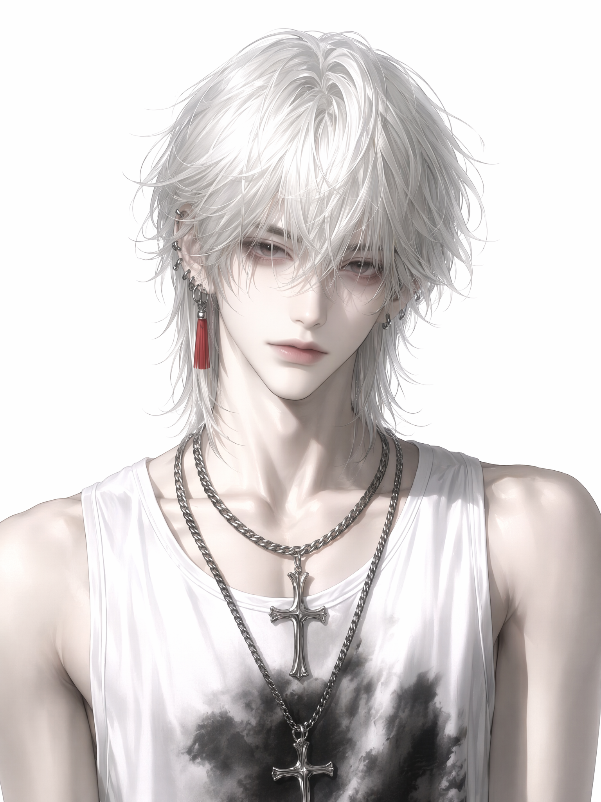
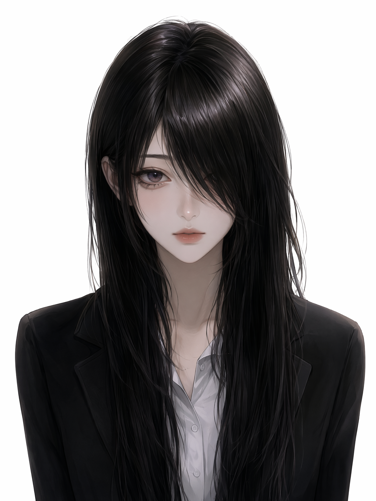
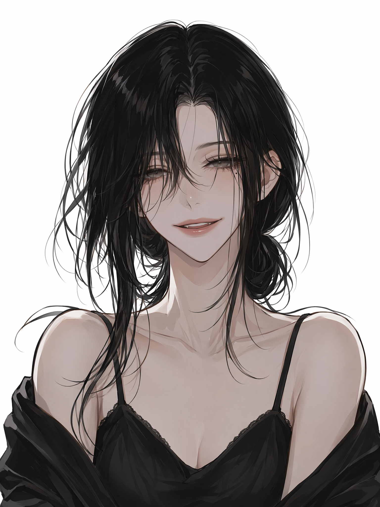
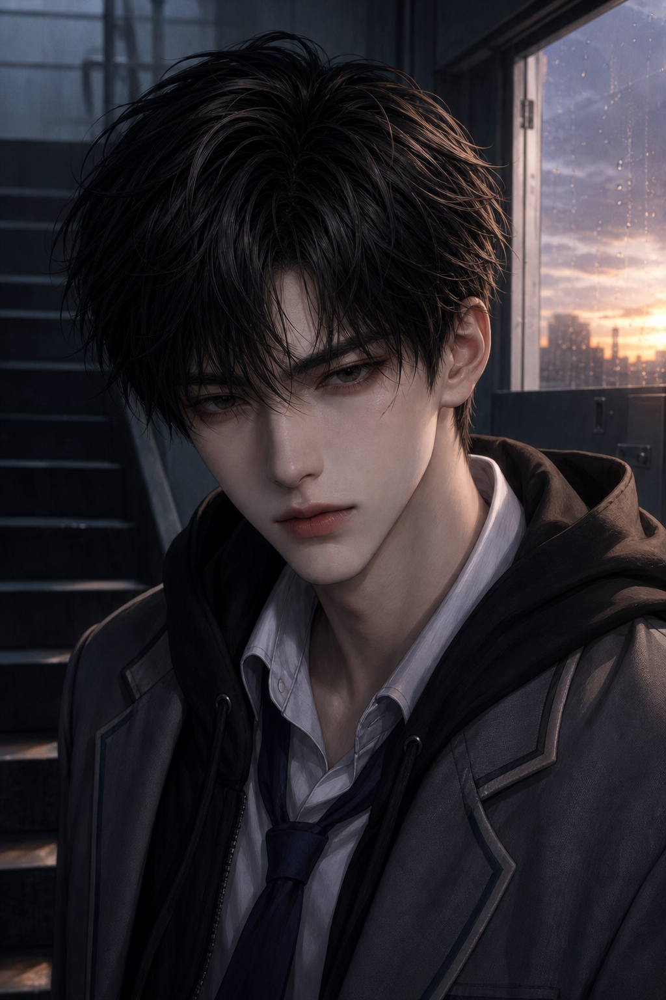

周叙
冷白、疏离、像不肯解释的秘密
保留银白乱发和冷淡眼神，把成人饰品收掉，变成走廊里一眼望过去就会记住的人。
每张高中版都以原图作为身份参考，保留脸型、眼神、发色和角色气质；同时统一为校园场景、校服造型、非性感表达，方便后续嵌入女性向悬疑恋爱叙事。
冷白、疏离、像不肯解释的秘密
保留银白乱发和冷淡眼神，把成人饰品收掉，变成走廊里一眼望过去就会记住的人。


主角视角、安静、防备又柔软
她的高中版更适合代入：在教室窗边抬眼，像一段感情线真正开始之前的暂停。


会笑、会靠近，也像知道太多
保留慵懒笑意和眼下标记，改成雨后运动场的校园记忆，甜感和危险感并存。


倔强、阴影、需要被靠近的人
高中版保留新参考图的冷感五官和记忆点，换成统一校服近景，更适合在感情线里制造危险又想靠近的吸引力。


安静、锋利、不是怪物但让人紧张
从二章走廊侧影提炼成稳定高中版：黑发、统一校服、五官有记忆点，适合后续悬疑线逐步露出，而不是一登场就把答案明牌。